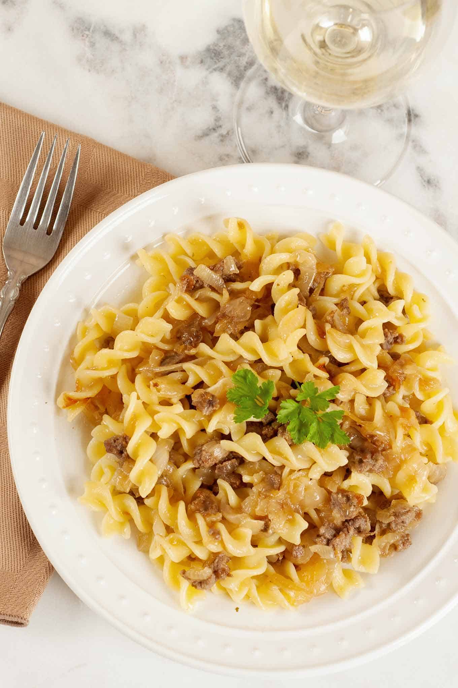

Pasta and Onions

Description
Servings: 3-4
Total time: 20 minutes
An easy, delicious, and affordable dinner. Simple yet packed full of flavor.
Ingredients
- 1lb pasta of your choice
- 4 large white or yellow onions
- Basil
- Parmasan
Steps
- Dice up the onions to your preferred size, add to a large skillet with a light coating of olive oil over medium heat. Continue cooking until onions have caramelized and turned dark brown, stirring regularly.
- Boil a pot of water, and cook pasta for the recommended time. Drain after cooking
- Once onions and pasta are finished cooking, combine both in a large pot. Add basil, olive oil, and parmesan cheese to taste. Stir thoroughly.
- That's it! Enjoy!